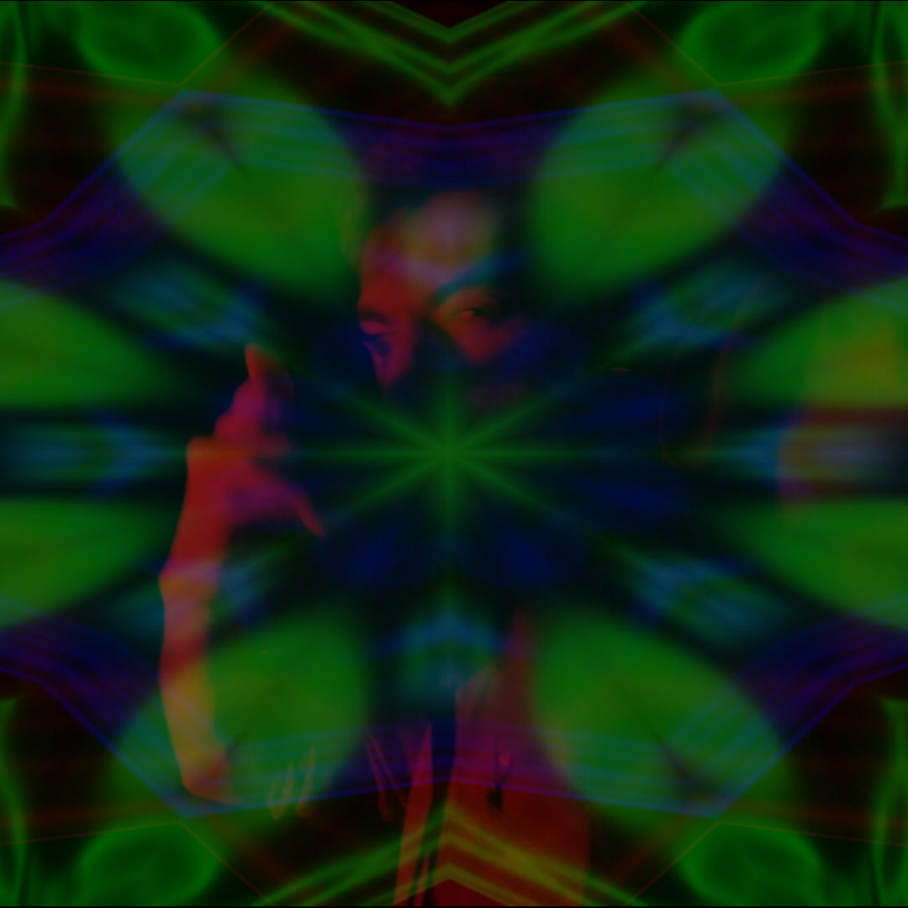
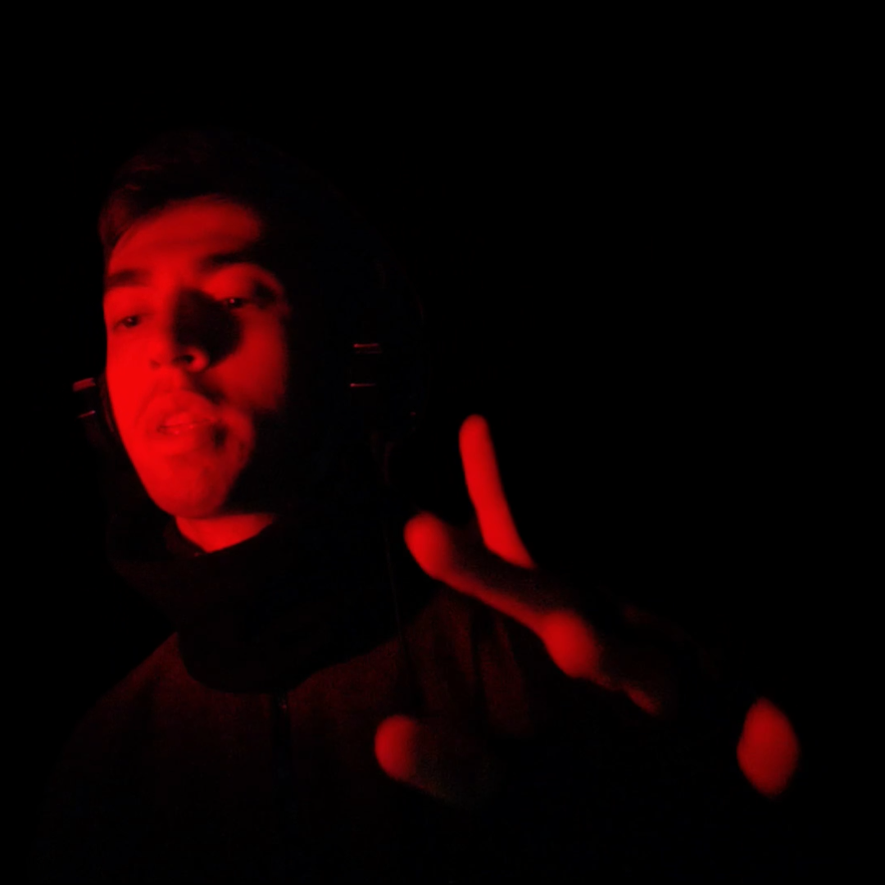
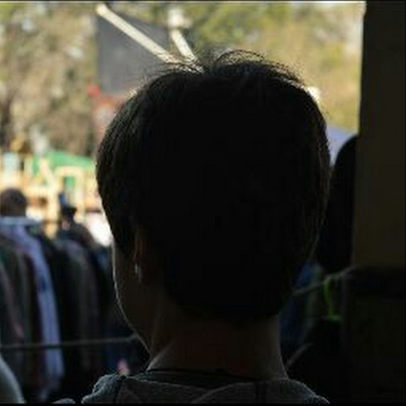

Videojockey VJ
¿Qué es un VideoJockey (VJ)?
Un VJ, o Video Jockey, es un artista que se especializa en la creación y manipulación en tiempo real de contenido visual. Generalmente para eventos en vivo como conciertos, festivales, discotecas y otros espectáculos. Así como un DJ mezcla música, un VJ mezcla y manipula imágenes y videos en tiempo real, sincronizándolos con la música o el ambiente del evento. Las visuales pueden ser proyectadas en pantallas LED o proyectores.
¿Qué hace un VJ?
Un VJ crea contenido visual, desde generación de visuales hasta edicion de videos. Los VJs reaccionan en tiempo real a la música, cambiando los visuales en sincronía con el ritmo, los cambios de tempo y las transiciones musicales. Por esta razón, trabajan en conjunto con DJs, bandas o productores de música para crear una experiencia audiovisual coherente. En algunos casos, realizan mapping, que es la proyección de imágenes sobre superficies tridimensionales como edificios, esculturas u objetos, adaptando los visuales a la forma y características de estas superficies.
YO como un VJ
Tuve prácticas de VJing en la universidad como trabajos prácticos.
Realicé Video Mapping y cambios de visuales en tiempo real.
No soy un DJ, aunque un día espero serlo, pero soy un VJ.
Acompaño la música del DJ mezclando imágenes/video en vivo.
En mis prácticas, mezclo previamente la música (aunque no tenga la habilidad que anhelo).
Personalmente práctico con música electrónica, ya que es mi favorita.
A continuación te dejo una práctica que realicé el día 19/7/24. La música NO es mía, las visuales SÍ.
¿Por qué es importante un VJ?
Los visuales sincronizados con la música crean una experiencia más rica y envolvente para el público. Los cambios visuales pueden influir en la energía y el ambiente del evento, potenciando el impacto de la música. La creatividad y el estilo de un VJ pueden añadir una dimensión artística única al evento, diferenciándolo de otros.
Sobre mí
¡Hola! Soy Juan Pedro.
Un joven artista apasionado por la música electrónica.
En 2019, se me reveló mi sueño, lo que me llevó a mi comienzo en el mundo del arte.
Descubrí mi creatividad estando en la secundaria en el Instituto Dr. Juan Segundo Fernández (IJSF).
Al terminar la secundaria, quería hacer algo con mi creatividad, así que decidí comenzar mi viaje artístico formándome en las artes multimediales en la UNA.
Las artes multimediales implican experimentar con sonidos, texturas e imágenes junto con las nuevas tecnologías aplicadas a la producción artística, como la creación de instalaciones interactivas, performance multimedia, arte electrónico, etc. Desde 2022, he comenzado a descubrirme en mis prácticas artísticas, siguiendo mis creencias e ideales. Durante ese año me pregunté: “¿Cómo puedo hacer arte si no sé dibujar?”. El artista multimedial no necesita saber dibujar bien, sino crear obras combinando lo sonoro y lo visual para un fin artístico. Recuerdo que en clase me impactaron las obras de otros estudiantes, y pude decirme a mí mismo: ¡PUEDO HACER ESTO!

Una frase personal que mantengo en mi mente es "Tu mochila es mi mochila", porque creo que lo que cargan los demás y sus problemas, también son míos.
Me gusta ayudar en todo lo que puedo y siempre poner una sonrisa.
Me considero una persona creativa, ordenada y persistente.
Me gusta escuchar música, jugar a videojuegos y ver las competencias que estos traen.
Durante mi tiempo libre, disfruto pasar tiempo con mi familia y amigos, y tirar visuales como forma de práctica artística.
En 2024, recordé mi sueño y mi motivación por él volvió.
Quiero hacer que cada día sea un día más cercano a mi sueño.
Pensé: “No planeo dejar las artes multimediales, pero si pudiera ser quién quiero ser, convertirme en quién realmente quiero ser, no lo dudaría ni un segundo”.
- |Técnico electromecánico|
- |Estudiante Artes Multimediales|
- |Creador de contenido|
- |Editor de videos|
- |VJ|
¡Sí! Esta página la hice en mi tiempo libre.